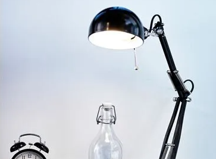

£15

ACCESSORIES
You can easily direct the light where you want it
because the lamp arm and head are adjustable.
Light bulb sold separately.
Minimal Decor recommends LED bulb E14 400 lumen chandelier opal
white.